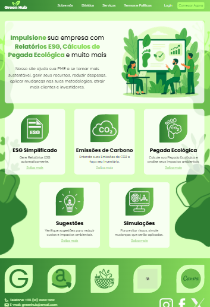
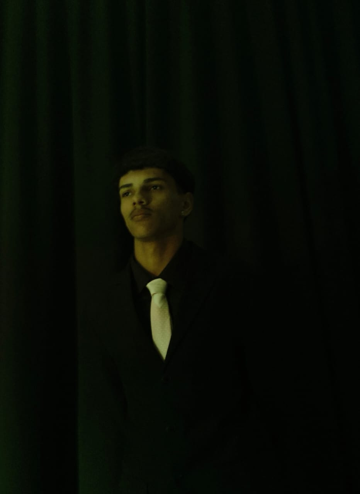
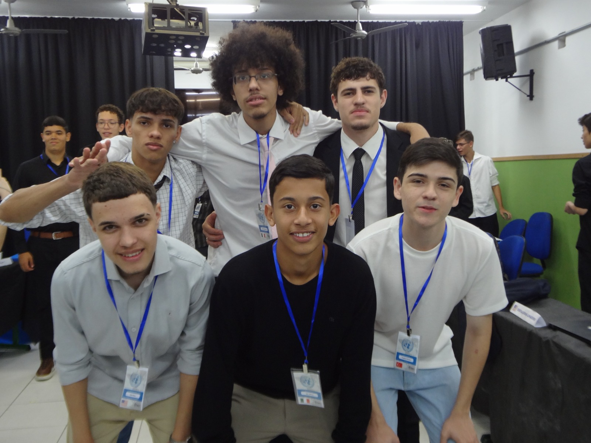

|
 |
HACKATON - Green Hub
Green Hub é um projeto desenvolvido durante um hackathon acadêmico, com o objetivo de ajudar pequenas e médias empresas e indústrias a compreender e reduzir seus impactos ambientais. A plataforma permite calcular a pegada ecológica da empresa, organizar inventários de emissões e auxiliar na elaboração de relatórios ESG. Além disso, o sistema oferece sugestões de práticas mais sustentáveis e econômicas, ajudando as empresas a melhorar seus processos de produção. O Green Hub também possibilita a realização de simulações e comparações com outras empresas do mesmo setor, permitindo avaliar o desempenho ambiental e identificar oportunidades de melhoria. O projeto busca incentivar a adoção de práticas sustentáveis nas empresas, promovendo maior transparência com clientes e contribuindo para a redução dos impactos ambientais, ao mesmo tempo em que fortalece o valor e a imagem da marca no mercado. |
|
Sarau: Consciência Negra
Participei de um Sarau de Consciência Negra realizado na escola, um evento voltado à valorização da cultura, da história e das lutas da população negra. O sarau reuniu apresentações, reflexões e momentos de expressão artística que incentivaram o respeito à diversidade e a conscientização sobre a importância da igualdade na sociedade. Durante o evento, tive a oportunidade de interpretar Martin Luther King Jr., um dos maiores líderes da luta pelos direitos civis. A experiência foi muito significativa, pois me permitiu refletir sobre sua história, sua mensagem de igualdade e a importância de continuar debatendo esses temas nos dias atuais. Além disso, a participação no sarau contribuiu para o desenvolvimento da minha expressão em público e para o fortalecimento do trabalho coletivo em atividades culturais e educacionais. |
 |
|
 |
Simulação da ONU
Participei de uma Simulação da ONU realizada na escola, uma atividade acadêmica inspirada no funcionamento das Nações Unidas, na qual os estudantes representam países e debatem problemas internacionais como se fossem diplomatas. O objetivo da simulação é desenvolver habilidades como pesquisa, argumentação, negociação e pensamento crítico, além de estimular a compreensão de questões políticas, sociais e humanitárias que afetam diferentes regiões do mundo. Durante a atividade, representei a Síria em um debate sobre a crise imigratória. Para isso, precisei pesquisar sobre o contexto histórico, político e social do país, entender suas dificuldades e posicionamentos e defender seus interesses durante as discussões com os demais participantes. Ao longo do debate, apresentei argumentos, respondi a questionamentos e participei das negociações propostas no comitê. A experiência foi muito enriquecedora, pois permitiu desenvolver minha capacidade de falar em público, construir argumentos de forma estruturada e analisar problemas globais sob diferentes perspectivas. Além disso, a atividade contribuiu para ampliar meu entendimento sobre relações internacionais e a importância do diálogo na busca por soluções para desafios mundiais. |
|
Ygor Ferreira © 2026. Portifolio |